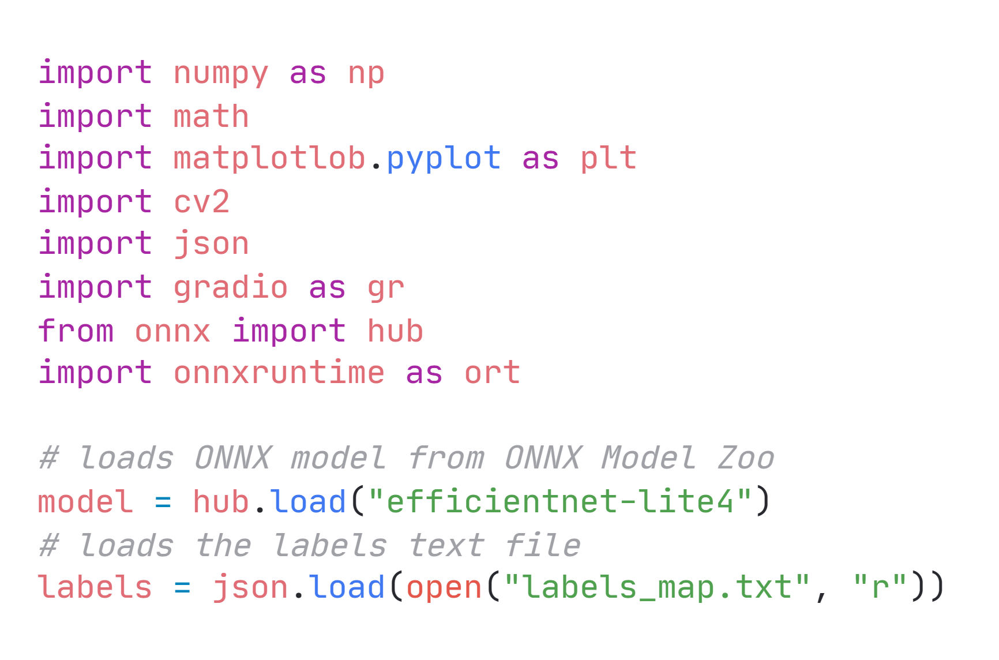
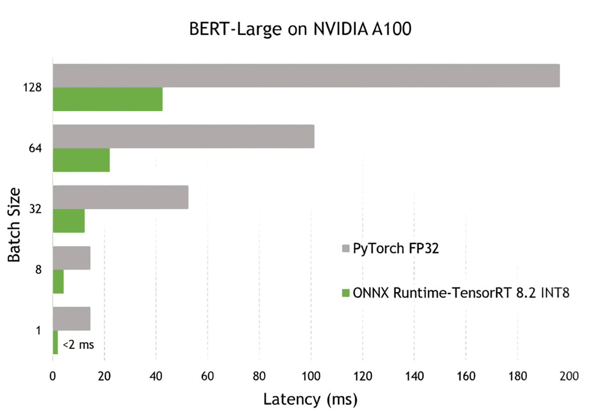
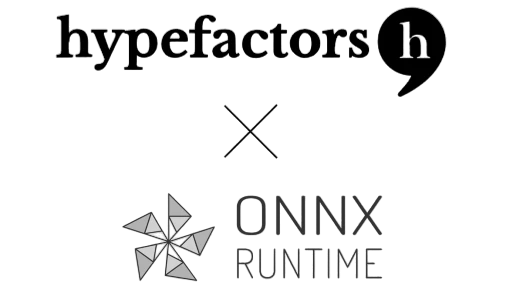
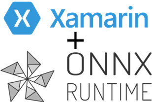
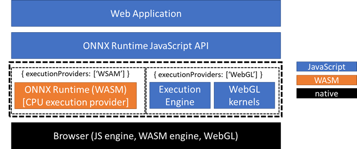
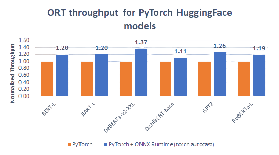
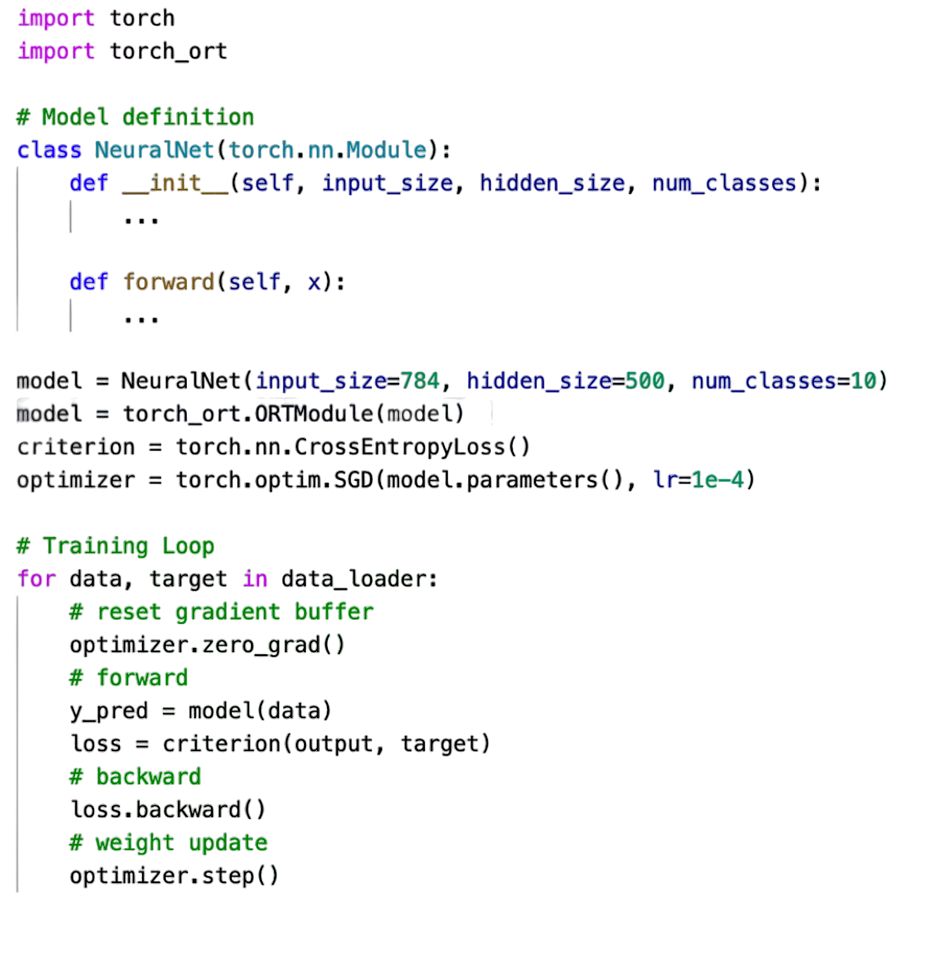
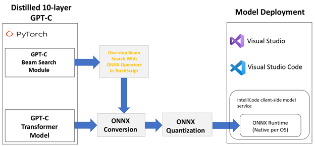

News & Announcements
Live demos of machine learning models with ONNX and Hugging Face Spaces
June 6, 2022Choosing which machine learning model to use, sharing a model with a colleague, and quickly trying out a model are all reasons why you may find yourself wanting to quickly run inference on a model. You can configure your environment and download Jupyter notebooks, but it would be nicer if there was a way to run a model with even less effort...
Read more

Optimizing and deploying transformer INT8 inference with ONNX Runtime-TensorRT on NVIDIA GPUs
May 2, 2022Transformer-based models have revolutionized the natural language processing (NLP) domain. Ever since its inception, transformer architecture has been integrated into models like Bidirectional Encoder Representations from Transformers (BERT) and Generative Pre-trained Transformer (GPT) for performing tasks such as text generation or summarization and question and answering to name a few...
Read more

Scaling-up PyTorch inference: Serving billions of daily NLP inferences with ONNX Runtime
April 19, 2022Scale, performance, and efficient deployment of state-of-the-art Deep Learning models are ubiquitous challenges as applied machine learning grows across the industry. We’re happy to see that the ONNX Runtime Machine Learning model inferencing solution we’ve built and use in high-volume Microsoft products and services also resonates with our open source community, enabling new capabilities that drive content relevance and productivity...
Read more

Add AI to mobile applications with Xamarin and ONNX Runtime
December 14, 2021ONNX Runtime now supports building mobile applications in C# with Xamarin. Support for Android and iOS is included in the ONNX Runtime release 1.10 NuGet package. This enables C# developers to build AI applications for Android and iOS to execute ONNX models on mobile devices with ONNX Runtime...
Read more

ONNX Runtime Web—running your machine learning model in browser
September 2, 2021We are introducing ONNX Runtime Web (ORT Web), a new feature in ONNX Runtime to enable JavaScript developers to run and deploy machine learning models in browsers. It also helps enable new classes of on-device computation. ORT Web will be replacing the soon to be deprecated onnx.js...
Read more

Accelerate PyTorch transformer model training with ONNX Runtime – a deep dive
July 13, 2021ONNX Runtime (ORT) for PyTorch accelerates training large scale models across multiple GPUs with up to 37% increase in training throughput over PyTorch and up to 86% speed up when combined with DeepSpeed...
Read more

Accelerate PyTorch training with torch-ort
July 13, 2021With a simple change to your PyTorch training script, you can now speed up training large language models with torch_ort.ORTModule, running on the target hardware of your choice.
Training deep learning models requires ever-increasing compute and memory resources. Today we release torch_ort.ORTModule, to accelerate distributed training of PyTorch models, reducing the time and resources needed for training...
Read more

ONNX Runtime release 1.8.1 previews support for accelerated training on AMD GPUs with the AMD ROCm™ Open Software Platform
July 13, 2021ONNX Runtime is an open-source project that is designed to accelerate machine learning across a wide range of frameworks, operating systems, and hardware platforms. Today, we are excited to announce a preview version of ONNX Runtime in release 1.8.1 featuring support for AMD Instinct™ GPUs facilitated by the AMD ROCm™ open software platform...
Read more
Journey to optimize large scale transformer model inference with ONNX Runtime
June 30, 2021Large-scale transformer models, such as GPT-2 and GPT-3, are among the most useful self-supervised transformer language models for natural language processing tasks such as language translation, question answering, passage summarization, text generation, and so on...
Read more

SAS and Microsoft collaborate to democratize the use of Deep Learning Models
March 30, 2021Artificial Intelligence (AI) developers enjoy the flexibility of choosing a model training framework of their choice. This includes both open-source frameworks as well as vendor-specific ones. While this is great for innovation, it does introduce the challenge of operationalization across different hardware platforms...
Read more

Optimizing BERT model for Intel CPU Cores using ONNX runtime default execution provider
March 1, 2021The performance improvements provided by ONNX Runtime powered by Intel® Deep Learning Boost: Vector Neural Network Instructions (Intel® DL Boost: VNNI) greatly improves performance of machine learning model execution for developers...
Read more